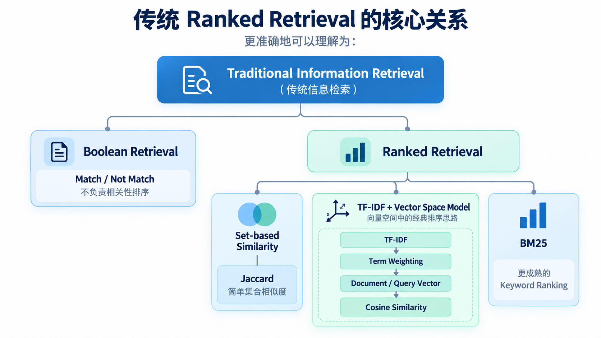

Ranked Retrieval
1. 从 Boolean Retrieval 到 Ranking
Boolean Retrieval 只能回答：
这个文档是否满足查询条件？
但真实检索系统通常还需要回答：
哪个文档更相关？
因此需要为候选文档计算相关性分数，并按照分数排序。
2. Jaccard Similarity
Jaccard 用于比较两个集合的重合程度。
公式：
J(Q, D) = |Q ∩ D| / |Q ∪ D|
例如：
Query:
{machine, learning, model}
Document:
{machine, learning, algorithm, python}
则：
Intersection = 2
Union = 5
Jaccard = 2 / 5 = 0.4
特点：
- 简单
- 分数范围 0～1
- 不考虑 Term Frequency
- 不考虑词的全局稀有程度
- 不考虑词序
- 不理解语义
3. Term Frequency（TF）
TF 表示 Term 在某个文档中出现的次数。
基础形式：
TF(t, d) = count(t, d)
但词频与重要性通常不是线性关系。
因此常使用 Log TF：
TF_log(t, d) = 1 + log(TF(t, d))
当 TF > 0 时成立。
它用于削弱极高词频带来的影响。
4. Inverse Document Frequency（IDF）
IDF 衡量 Term 在整个文档集合中的区分能力。
基础公式：
IDF(t) = log(N / DF(t))
其中：
N：文档总数DF(t)：包含 Termt的文档数量
如果某个词出现在几乎所有文档中，它的 IDF 很低。
如果某个词只出现在少量文档中，它的 IDF 较高。
因此：
common term -> low IDF
rare term -> high IDF
5. TF-IDF
TF-IDF 综合考虑：
- 一个 Term 在当前文档中出现得有多频繁
- 这个 Term 在整个文档集合中有多稀有
基础形式：
TF-IDF(t, d)
=
TF(t, d) × IDF(t)
因此一个词如果：
- 在当前文档出现很多次
- 但在其他文档很少出现
通常会获得较高权重。
6. Vector Space Model
可以把每个文档表示成一个高维向量。
每个维度对应一个 Term：
D =
[w1, w2, w3, ..., wn]
其中权重可以使用 TF-IDF。
Query 也可以表示为相同空间中的向量。
这样可以通过向量相似度计算 Query 与 Document 的相关性。
7. Cosine Similarity
常见相似度：
cos(Q, D)
=
(Q · D) / (||Q|| ||D||)
它比较两个向量的方向，而不是只比较绝对长度。
优点之一是可以减轻文档长度差异带来的影响。
8. BM25
BM25 是经典且非常重要的词项相关性排序方法。核心思想仍然来自：TF-IDF，但它进一步处理两个问题。
Term Frequency Saturation
一个词从出现 1 次增加到 5 次通常很重要。但从 100 次增加到 104 次，并不应该继续线性增加大量相关性。BM25 对 TF 做饱和处理。
Document Length Normalization
长文档天然更容易出现更多 Query Terms。BM25 会根据文档长度与平均文档长度进行归一化。
简化理解：
BM25 = IDF × TF Saturation × Document Length Normalization
因此 BM25 通常比基础 TF-IDF 更适合作为实际全文检索排序函数。
9. 传统 Ranked Retrieval 的核心关系
可以把它理解为：
